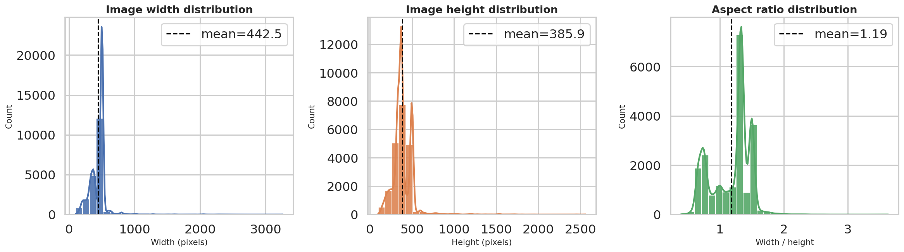
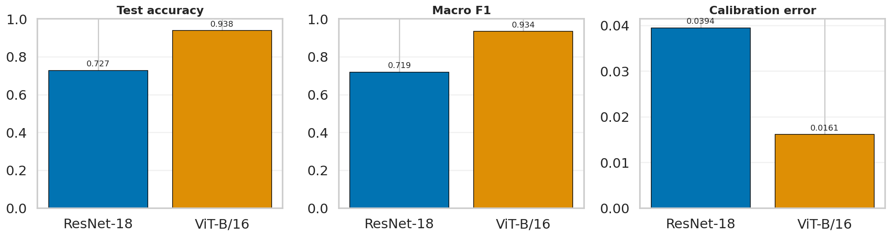
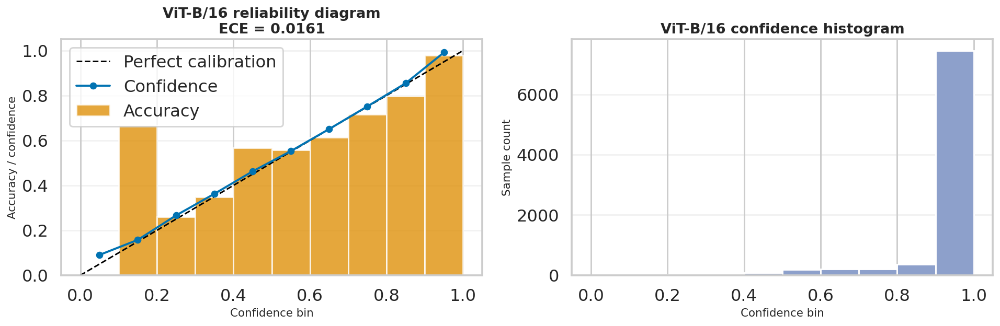
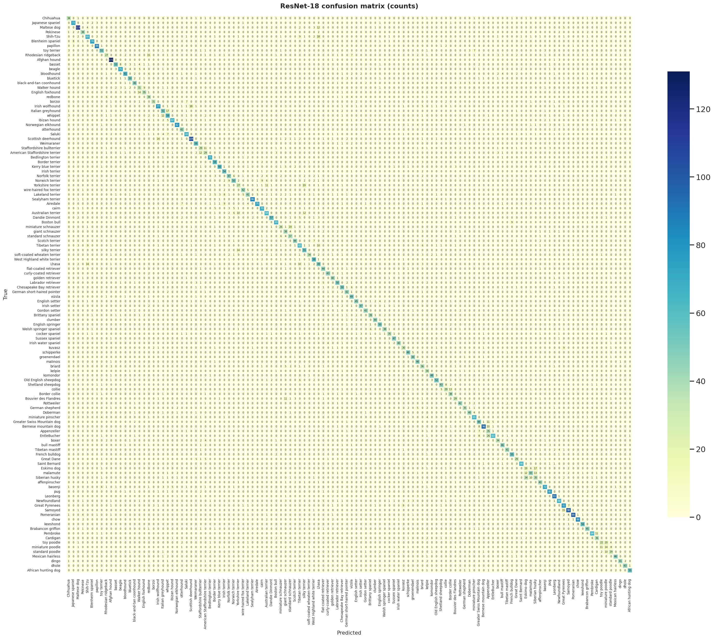
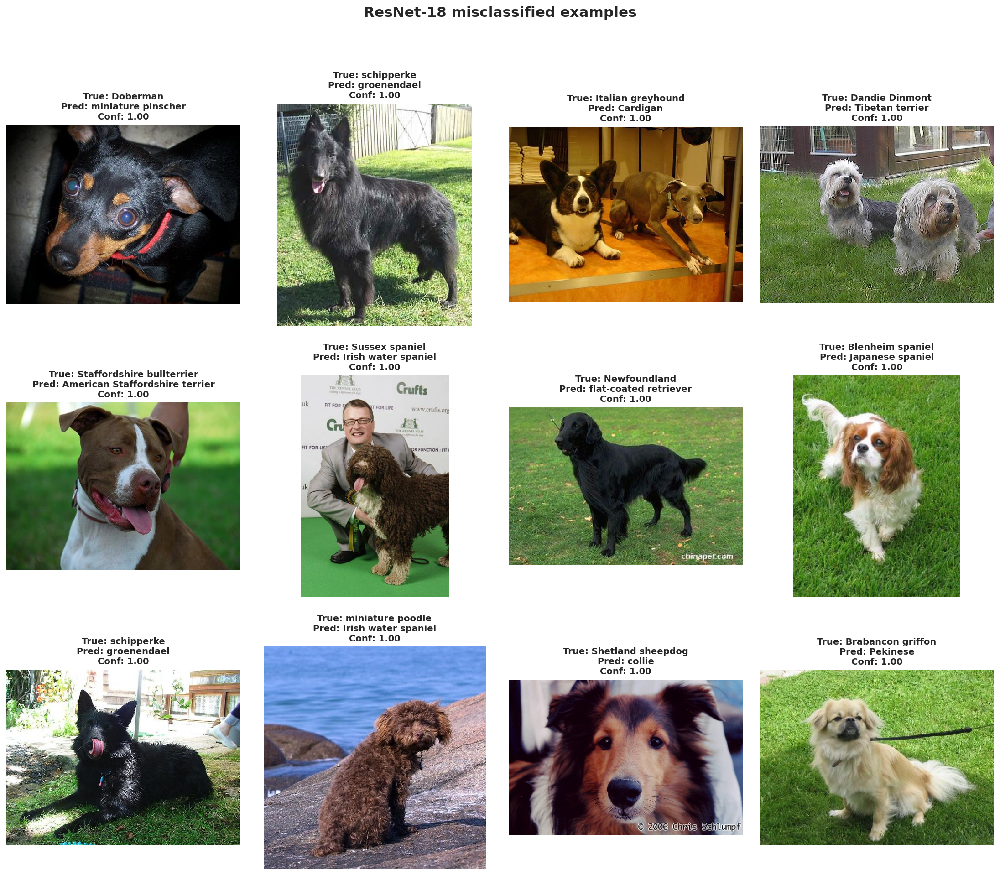
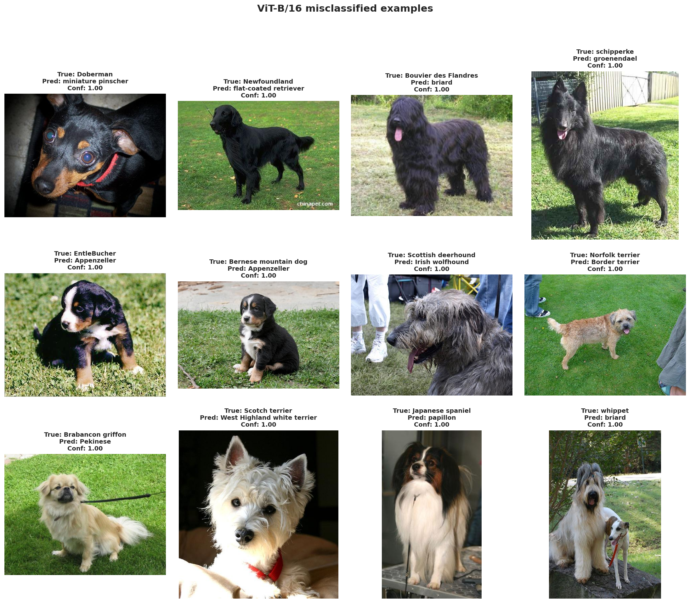
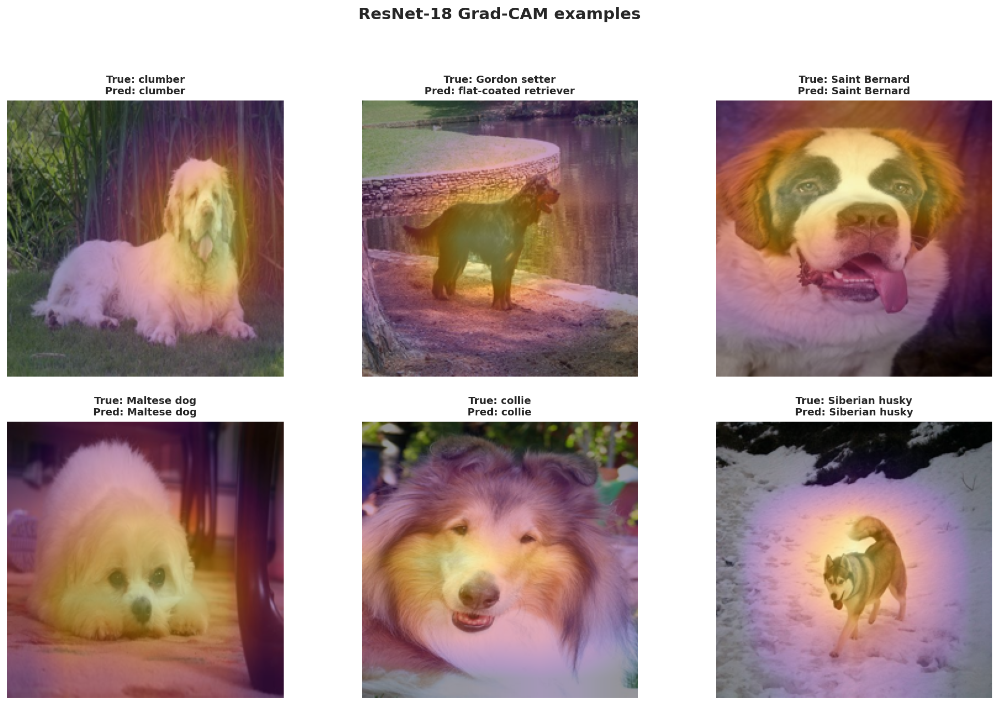
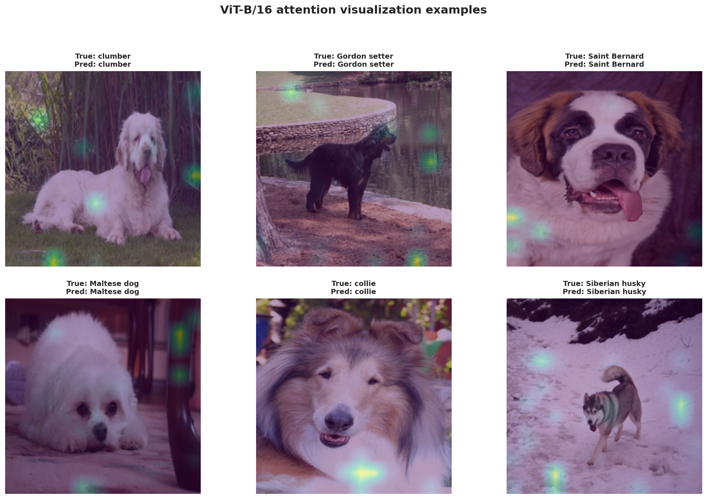

Image track
CNN vs ViT on Stanford Dogs.
This page contains the full image report for Assignment 1, including the required five report categories and the completed extension work.
Image track
This page contains the full image report for Assignment 1, including the required five report categories and the completed extension work.
This page follows the required structure for the image dataset component using the final Stanford Dogs experiments.
Dataset
Stanford Dogs
120 classes, 12,000 train, 8,580 test, fine-grained dog-breed classification
CNN result
72.73%
ResNet-18 test accuracy
ViT result
93.78%
ViT-B/16 test accuracy
Calibration
0.0394 / 0.0161
ECE for ResNet-18 and ViT-B/16
The image task is a fine-grained multi-class classification problem comparing a CNN baseline and a Vision Transformer on Stanford Dogs.
Problem statement
The goal is to classify each image into one of 120 dog breeds and compare two major model families under the same dataset and evaluation protocol.
Dataset summary
Stanford Dogs is a fine-grained benchmark with enough classes and enough training samples to make the CNN-versus-Transformer comparison meaningful and non-trivial.
EDA highlights
The EDA shows that Stanford Dogs is visually diverse in brightness, contrast, saturation, image size, aspect ratio, and scene composition. The official split remains large enough for training and evaluation, while the breed distribution stays only moderately imbalanced.

Brightness, contrast, and saturation distributions confirm a broad range of lighting and color conditions.

The official train/test split is large, and the top-20 breeds remain relatively balanced.

Width, height, and aspect-ratio distributions show that the dataset contains varied image geometries before resizing to the common model input size.

Random breed samples illustrate variation in pose, background, scale, and real-world capture conditions.
Extreme brightness examples
To complement the summary statistics, we also inspected the darkest and brightest images in the dataset. This helps verify that the measured brightness range corresponds to meaningful visual variation rather than only small numerical differences.
The darkest examples are mostly low-light indoor images, shadow-heavy scenes, or photos with strong exposure limitations. In several cases, the dog occupies only part of the frame or blends into a dark background, which makes recognition harder even for humans. These samples motivate brightness-robust preprocessing and moderate augmentation.

The darkest images in Stanford Dogs illustrate low-light scenes, dark backgrounds, and reduced visibility of breed-specific features.

The brightest images often contain white backgrounds or bright fur, showing the opposite end of the illumination range.
Together, these two galleries confirm that Stanford Dogs includes substantial illumination diversity. This reinforces the need for normalization and moderate augmentation so that both CNN and ViT models learn breed features that remain stable under different lighting conditions.
Both notebooks use the same Stanford Dogs split and a consistent preprocessing strategy for fair comparison.
Shared pipeline
We keep the official test split untouched so the final evaluation remains comparable to the original benchmark setup. This is important because the test set should represent genuinely unseen data, not images that were indirectly used to tune the model.
In simple terms: the test set is the final exam. If we mix it into training or validation, the reported result becomes less trustworthy.
The validation set is created only from the official training split, and we use a stratified split so each
dog breed remains represented in both train and val. This matters because Stanford Dogs has 120 breeds, and a naive random
split could leave some classes underrepresented.
The validation set is used during development to monitor generalization, choose checkpoints, and compare training choices without touching the benchmark test set.
The original images have different sizes and aspect ratios, but pretrained ResNet-18 and ViT-B/16
expect a fixed input size. Resizing to 256 × 256 standardizes the image first, then cropping to
224 × 224 produces the final tensor size used by both backbones.
This two-step design is common because it avoids feeding wildly different spatial sizes into the network and still preserves the central dog region more reliably than resizing directly to a very small square in one step.
A batch is the number of images processed before the model updates its weights once. Using 32 images per batch
is a practical compromise: it is large enough for stable gradient estimates, but still small enough to fit comfortably in GPU
memory for both the CNN and the much larger ViT model.
If the batch is too small, training can become noisy. If it is too large, the GPU may run out of memory or training may become less flexible when comparing different backbones.
num_workers controls how many background worker processes prepare images in parallel while the GPU is training.
Using 4 workers helps overlap data loading with computation so the GPU spends less time waiting for the next batch.
In the notebook, this is also made platform-aware: Windows uses 0 workers for compatibility, while Linux-based
training environments use 4 workers for better throughput.
When training on GPU, pin_memory=True can speed up the transfer of batches from CPU RAM to GPU memory.
It does not change the model itself, but it helps the input pipeline become more efficient.
In the notebook, this setting is enabled only when CUDA is available. That means it is used as a performance optimization on GPU machines rather than as a mandatory requirement.
If worker processes are recreated again and again, data loading has extra overhead. With
persistent_workers=True, the DataLoader keeps workers alive across epochs so batch preparation becomes smoother.
This setting is useful only when multiple workers are active, which is why the notebook ties it to the
num_workers > 0 condition.
Both models are ImageNet-pretrained, so the original dog images are resized and normalized to match the backbone input requirements.
Open any item in the list above to see why that choice was made and what it does inside the notebook pipeline.
CNN transform
These three operations make the CNN see the same breed under slightly different framing and orientation.
RandomResizedCrop(scale=(0.72, 1.0)) changes how tightly the dog is framed, horizontal flip adds
left-right variation, and RandomRotation(15) makes the model less sensitive to small camera tilt.
This is especially useful for dog photos because pose, camera angle, and subject placement vary a lot in the dataset.
ColorJitter(brightness=0.15, contrast=0.15, saturation=0.15) simulates lighting variation, while
Normalize(IMAGENET_MEAN, IMAGENET_STD) aligns the input distribution with ImageNet-pretrained weights.
RandomErasing(p=0.10) acts like a mild occlusion simulation: part of the image is masked so the model
learns not to depend on only one local patch such as one ear, one eye, or a small fur texture region.
Validation and test preprocessing is deterministic. We do not use random augmentation there because evaluation should measure the model itself, not randomness from the input pipeline.
Resize + CenterCrop + ToTensor + Normalize creates a stable and repeatable input path for every evaluation run.
The CNN notebook uses moderate augmentation to improve robustness to pose, scale, illumination, and partial occlusion in dog photos.
Transformer transform
The ViT training pipeline still uses crop and flip, but the crop range is narrower:
RandomResizedCrop(scale=(0.78, 1.0)). This means the model sees less aggressive spatial distortion than
the ResNet setup.
The reason is practical: Stanford Dogs is a fine-grained task, so overly strong augmentation can destroy subtle breed cues such as ear shape, muzzle geometry, or fur structure that the Transformer needs to separate similar classes.
Just like ResNet, ViT uses ImageNet normalization so the pretrained backbone receives inputs in a familiar scale.
The erasing step is also milder at p=0.08, because the augmentation policy is intentionally less aggressive overall.
In other words, the ViT pipeline still regularizes training, but it does so with more restraint to avoid hurting fine-grained recognition.
The evaluation transform is shared with the CNN setup. This is important because model comparison is more meaningful when both backbones are tested under the same deterministic input pipeline.
Using the same validation/test preprocessing ensures that any performance gap is mainly due to the model family and training strategy, not different evaluation transforms.
The ViT notebook keeps augmentation lighter so that fine-grained breed cues are preserved while still improving generalization.
Implementation detail
In the notebook, we keep the official Stanford Dogs benchmark test split untouched, then create the validation set only from the official training split using a stratified shuffle split. This means the label distribution is preserved across train and validation while the final test set remains a clean benchmark for reporting.
Split logic
Code example
splitter = StratifiedShuffleSplit(
n_splits=1,
test_size=0.15,
random_state=SEED,
)
train_idx, val_idx = next(
splitter.split(train_meta_full, train_meta_full["label"])
)
train_meta = train_meta_full.iloc[train_idx].reset_index(drop=True)
val_meta = train_meta_full.iloc[val_idx].reset_index(drop=True)
test_meta = test_meta.reset_index(drop=True)Exact transforms
Shared evaluation transform
Resize((256, 256))CenterCrop(224)ToTensor()Normalize(IMAGENET_MEAN, IMAGENET_STD)ResNet-18 train transform
Resize((256, 256))RandomResizedCrop(224, scale=(0.72, 1.0))RandomHorizontalFlip(0.5)RandomRotation(15)ColorJitter(brightness=0.15, contrast=0.15, saturation=0.15)RandomErasing(p=0.10) after normalizationViT-B/16 train transform
Resize((256, 256))RandomResizedCrop(224, scale=(0.78, 1.0))RandomHorizontalFlip(0.5)ColorJitter(brightness=0.10, contrast=0.10, saturation=0.10)RandomErasing(p=0.08) after normalizationresnet_train_transform = transforms.Compose([
transforms.Resize((256, 256)),
transforms.RandomResizedCrop(IMAGE_SIZE, scale=(0.72, 1.0)),
transforms.RandomHorizontalFlip(0.5),
transforms.RandomRotation(15),
transforms.ColorJitter(brightness=0.15, contrast=0.15, saturation=0.15),
transforms.ToTensor(),
transforms.Normalize(IMAGENET_MEAN, IMAGENET_STD),
transforms.RandomErasing(p=0.10),
])This is why the ResNet batch preview visibly includes crop, flip, rotation, color, and erasing effects. The ViT pipeline uses the same overall structure, but with a narrower crop range and softer color changes.
Split and batch summary
The second ablation studies optimization strategy rather than data preprocessing. Here, the notebook compares freeze backbone with full fine-tune for both backbones. In the frozen setting, only the final classifier layer is trainable; in the full setting, every parameter receives gradients.
def freeze_resnet_backbone(model):
for param in model.parameters():
param.requires_grad = False
for param in model.fc.parameters():
param.requires_grad = True
def freeze_vit_backbone(model):
for param in model.parameters():
param.requires_grad = False
for param in model.heads.parameters():
param.requires_grad = True
def run_simple_experiment(model_builder, model_label, train_loader, val_loader, test_loader, epochs, lr, weight_decay, freeze_fn=None):
model = model_builder(NUM_CLASSES).to(DEVICE)
if freeze_fn is not None:
freeze_fn(model)
trainable_params = sum(p.numel() for p in model.parameters() if p.requires_grad)
optimizer = AdamW(filter(lambda p: p.requires_grad, model.parameters()), lr=lr, weight_decay=weight_decay)
else:
trainable_params = count_total_params(model)
optimizer = AdamW(model.parameters(), lr=lr, weight_decay=weight_decay)
scheduler = CosineAnnealingLR(optimizer, T_max=max(1, epochs))
criterion = nn.CrossEntropyLoss()
_, training_seconds = fit_model(model, train_loader, val_loader, criterion, optimizer, scheduler=scheduler, epochs=epochs, stage_name=model_label)
targets, preds, probs = predict_model(model, test_loader)
ece, *_ = compute_ece(probs, targets, n_bins=10)
return {"setting": model_label, "accuracy": accuracy_score(targets, preds), "macro_f1": f1_score(targets, preds, average="macro"), "weighted_f1": f1_score(targets, preds, average="weighted"), "ece": ece, "train_time_s": training_seconds, "trainable_params": trainable_params}| Split | Images | Classes | Min class count | Max class count |
|---|---|---|---|---|
| Train | 10,200 | 120 | 85 | 85 |
| Val | 1,800 | 120 | 15 | 15 |
| Test | 8,580 | 120 | 48 | 152 |
shuffle=True; validation and test loaders use shuffle=False.batch_size=32, num_workers=4, pin_memory=True, and persistent_workers=True.image_path, converts every image to RGB, and returns (image, label).class StanfordDogsFrameDataset(Dataset):
def __getitem__(self, idx):
row = self.frame.iloc[idx]
image = Image.open(row["image_path"]).convert("RGB")
label = int(row["label"])
if self.transform is not None:
image = self.transform(image)
return image, label
def build_loaders(train_transform):
train_ds = StanfordDogsFrameDataset(train_meta, transform=train_transform)
val_ds = StanfordDogsFrameDataset(val_meta, transform=common_eval_transform)
test_ds = StanfordDogsFrameDataset(test_meta, transform=common_eval_transform)
train_loader = DataLoader(train_ds, batch_size=32, shuffle=True, num_workers=4, pin_memory=True, persistent_workers=True)
val_loader = DataLoader(val_ds, batch_size=32, shuffle=False, num_workers=4, pin_memory=True, persistent_workers=True)
test_loader = DataLoader(test_ds, batch_size=32, shuffle=False, num_workers=4, pin_memory=True, persistent_workers=True)
return train_loader, val_loader, test_loader
The augmented batch preview shows realistic crop, rotation, flip, color, and erasing effects while preserving the main breed identity.
The image section compares a lightweight CNN baseline with a larger Transformer model on fine-grained dog-breed classification.
Transfer learning diagram
The notebook follows one shared transfer-learning pipeline for both ResNet-18 and ViT-B/16. The main idea is simple: convert the raw dog photo into a standardized tensor, pass it through a pretrained visual backbone, replace the original ImageNet classifier with a new breed-specific head, then turn the final logits into probabilities and evaluation artifacts. Each node below can be opened to see what that stage means in practice.
x = input image tensor, T(x) = preprocessing transform, z = backbone feature representation, g(z) = classifier head logits, ŷ = predicted breed probabilities.
The pipeline starts from one raw Stanford Dogs photograph. Before entering the neural network, that image is still
a variable-size file on disk, so it is not yet ready for matrix operations on GPU. This stage simply means:
load one sample, read its breed label, and treat that image as the input variable x.
class StanfordDogsFrameDataset(Dataset):
def __init__(self, frame: pd.DataFrame, transform=None):
self.frame = frame.reset_index(drop=True).copy()
self.transform = transform
def __len__(self):
return len(self.frame)
def __getitem__(self, index):
row = self.frame.iloc[index]
image = Image.open(row["image_path"]).convert("RGB")
if self.transform is not None:
image = self.transform(image)
return image, int(row["label"])
The transform block converts the raw image into a standardized tensor. In this notebook, that means resizing,
cropping to 224 × 224, converting to tensor format, and normalizing with ImageNet mean/std.
During training, augmentation is also applied here. This is why the preprocessing stage is written as
T(x): it transforms the original image into a backbone-ready representation.
common_eval_transform = transforms.Compose([
transforms.Resize((256, 256)),
transforms.CenterCrop(224),
transforms.ToTensor(),
transforms.Normalize(mean=IMAGENET_MEAN, std=IMAGENET_STD),
])
resnet_train_transform = transforms.Compose([
transforms.Resize((256, 256)),
transforms.RandomResizedCrop(224, scale=(0.72, 1.0)),
transforms.RandomHorizontalFlip(0.5),
transforms.RandomRotation(15),
transforms.ColorJitter(brightness=0.15, contrast=0.15, saturation=0.15),
transforms.ToTensor(),
transforms.Normalize(mean=IMAGENET_MEAN, std=IMAGENET_STD),
])
The backbone is the main feature extractor. It receives the transformed tensor and turns it into a compact
learned representation z. For ResNet-18, this representation comes from convolutional feature maps
followed by global pooling; for ViT-B/16, it comes from the Transformer encoder and the CLS token embedding.
In transfer learning, most of the useful visual knowledge already lives here because both backbones were
pretrained on ImageNet before being adapted to Stanford Dogs.
resnet_backbone = torchvision.models.resnet18(
weights=torchvision.models.ResNet18_Weights.IMAGENET1K_V1
)
vit_backbone = torchvision.models.vit_b_16(
weights=torchvision.models.ViT_B_16_Weights.IMAGENET1K_V1
)
The original ImageNet classifier head is removed and replaced with a new linear layer that outputs
120 logits, one for each Stanford Dogs breed. This is the task-specific part of the model.
In notation form, the head applies a small function g(z) to the backbone representation and
produces breed scores that can be optimized with cross-entropy loss.
def create_resnet18(num_classes: int) -> nn.Module:
model = torchvision.models.resnet18(weights=torchvision.models.ResNet18_Weights.IMAGENET1K_V1)
model.fc = nn.Linear(model.fc.in_features, num_classes)
return model
def create_vit_b16(num_classes: int) -> nn.Module:
model = torchvision.models.vit_b_16(weights=torchvision.models.ViT_B_16_Weights.IMAGENET1K_V1)
model.heads.head = nn.Linear(model.heads.head.in_features, num_classes)
return model
The logits are converted into probabilities with softmax, and the top probability gives the predicted breed
ŷ. These outputs are then reused for all report artifacts: test accuracy, macro F1, confusion
matrices, calibration curves, misclassified galleries, and interpretability visualizations. In other words,
the same prediction vector drives both model comparison and qualitative analysis.
def predict_model(model, loader):
model.eval()
all_targets, all_preds, all_probs = [], [], []
with torch.no_grad():
for images, targets in loader:
images = images.to(DEVICE, non_blocking=True)
outputs = model(images)
probs = torch.softmax(outputs, dim=1)
preds = probs.argmax(dim=1)
all_targets.extend(targets.numpy())
all_preds.extend(preds.cpu().numpy())
all_probs.extend(probs.cpu().numpy())
return np.array(all_targets), np.array(all_preds), np.array(all_probs)Shared training logic
In the notebook, the comparison is kept fair by using one common training-and-evaluation framework for both models. The dataset split, validation protocol, test loader, and reporting functions are shared. The main differences are the backbone architecture itself and the way each backbone is fine-tuned.
run_epoch(...) performs one full pass through a loaderfit_model(...) keeps the best validation checkpoint, not just the last epochpredict_model(...) and evaluate_model(...) generate the report artifactsdef run_epoch(model, loader, criterion, optimizer=None):
is_train = optimizer is not None
model.train(is_train)
total_loss = 0.0
all_targets, all_preds = [], []
for images, targets in tqdm(loader, leave=False):
images = images.to(DEVICE, non_blocking=True)
targets = targets.to(DEVICE, non_blocking=True)
if is_train:
optimizer.zero_grad(set_to_none=True)
outputs = model(images)
loss = criterion(outputs, targets)
if is_train:
loss.backward()
optimizer.step()
preds = outputs.argmax(dim=1)
total_loss += loss.item() * images.size(0)
all_targets.extend(targets.detach().cpu().numpy())
all_preds.extend(preds.detach().cpu().numpy())
return {
"loss": total_loss / len(loader.dataset),
"acc": accuracy_score(all_targets, all_preds),
"macro_f1": f1_score(all_targets, all_preds, average="macro"),
"weighted_f1": f1_score(all_targets, all_preds, average="weighted"),
}
def fit_model(model, train_loader, val_loader, criterion, optimizer, scheduler=None, epochs=10, stage_name="train"):
history = []
best_val_acc = -1.0
best_state = copy.deepcopy(model.state_dict())
for epoch in range(1, epochs + 1):
train_metrics = run_epoch(model, train_loader, criterion, optimizer=optimizer)
val_metrics = run_epoch(model, val_loader, criterion, optimizer=None)
if scheduler is not None:
scheduler.step()
history.append({
"stage": stage_name,
"epoch": epoch,
"train_loss": train_metrics["loss"],
"train_acc": train_metrics["acc"],
"val_loss": val_metrics["loss"],
"val_acc": val_metrics["acc"],
"val_macro_f1": val_metrics["macro_f1"],
"lr": optimizer.param_groups[0]["lr"],
})
if val_metrics["acc"] > best_val_acc:
best_val_acc = val_metrics["acc"]
best_state = copy.deepcopy(model.state_dict())
model.load_state_dict(best_state)
return pd.DataFrame(history)This shared loop is important for the report because it means the final differences mostly come from the model family itself, not from using a completely different training script for each experiment.
CNN model
The CNN baseline uses ResNet-18 with ImageNet-pretrained weights. In the notebook, its final fully connected layer is replaced so that the network predicts 120 dog breeds instead of the original ImageNet classes. After that replacement, the whole network is fine-tuned on Stanford Dogs for 12 epochs.
CrossEntropyLoss because the task is single-label multi-class
classification. Optimization is handled by AdamW, which is a common choice for transfer
learning because it combines adaptive learning rates with explicit weight decay. The learning-rate schedule
uses a short linear warmup followed by cosine annealing: the warmup stabilizes the beginning of training,
and cosine decay gradually reduces the step size as the model approaches a better local optimum.
def create_resnet18(num_classes: int) -> nn.Module:
model = models.resnet18(weights=models.ResNet18_Weights.IMAGENET1K_V1)
model.fc = nn.Linear(model.fc.in_features, num_classes)
return model
resnet_model = create_resnet18(NUM_CLASSES).to(DEVICE)
criterion = nn.CrossEntropyLoss()
optimizer = AdamW(resnet_model.parameters(), lr=RESNET_LR, weight_decay=RESNET_WEIGHT_DECAY)
warmup = LinearLR(optimizer, start_factor=0.2, total_iters=RESNET_WARMUP_EPOCHS)
cosine = CosineAnnealingLR(optimizer, T_max=max(1, RESNET_EPOCHS - RESNET_WARMUP_EPOCHS))
scheduler = SequentialLR(optimizer, schedulers=[warmup, cosine], milestones=[RESNET_WARMUP_EPOCHS])
resnet_history, resnet_training_seconds = fit_model(
resnet_model,
resnet_train_loader,
resnet_val_loader,
criterion,
optimizer,
scheduler,
RESNET_EPOCHS,
"stanforddogs_resnet18",
)Final parameter count: 11,238,072. This makes ResNet-18 much lighter than the ViT model and therefore useful as a practical CNN baseline.
Transformer model
The Transformer experiment uses ViT-B/16, again initialized from ImageNet-pretrained weights. Instead of directly fine-tuning all layers from the first epoch, the notebook uses a two-stage strategy: first it trains only the classification head for 3 epochs, then it unfreezes the entire backbone and continues with full fine-tuning for 8 more epochs.
CrossEntropyLoss and AdamW. For both
the head-only stage and the full-fine-tuning stage, the notebook uses cosine learning-rate decay. The
difference is that the head optimizer sees only trainable head parameters in the first stage, while the
second optimizer updates the entire model once all parameters are unfrozen.
def create_vit_b16(num_classes: int) -> nn.Module:
model = models.vit_b_16(weights=models.ViT_B_16_Weights.IMAGENET1K_V1)
model.heads.head = nn.Linear(model.heads.head.in_features, num_classes)
return model
vit_model = create_vit_b16(NUM_CLASSES).to(DEVICE)
criterion = nn.CrossEntropyLoss()
for param in vit_model.parameters():
param.requires_grad = False
for param in vit_model.heads.parameters():
param.requires_grad = True
optimizer_head = AdamW(filter(lambda p: p.requires_grad, vit_model.parameters()), lr=VIT_HEAD_LR, weight_decay=VIT_WEIGHT_DECAY)
scheduler_head = CosineAnnealingLR(optimizer_head, T_max=max(1, VIT_HEAD_EPOCHS))
vit_head_history, vit_head_seconds = fit_model(
vit_model, vit_train_loader, vit_val_loader, criterion, optimizer_head, scheduler_head, VIT_HEAD_EPOCHS, "stanforddogs_vit_head"
)
for param in vit_model.parameters():
param.requires_grad = True
optimizer_full = AdamW(vit_model.parameters(), lr=VIT_FINETUNE_LR, weight_decay=VIT_WEIGHT_DECAY)
scheduler_full = CosineAnnealingLR(optimizer_full, T_max=max(1, VIT_FINETUNE_EPOCHS))
vit_full_history, vit_full_seconds = fit_model(
vit_model, vit_train_loader, vit_val_loader, criterion, optimizer_full, scheduler_full, VIT_FINETUNE_EPOCHS, "stanforddogs_vit_full"
)Final parameter count: 85,890,936. The ViT model is much heavier, but the later test results show that this extra capacity translates into a much stronger fine-grained classifier.
Evaluation pipeline
After training, the notebook evaluates the restored best checkpoint on the test loader. The prediction helper saves three things for every sample: the true label, the predicted label, and the full softmax probability vector. Those outputs are then reused to build every reporting artifact shown later in the web page.
def predict_model(model, loader):
model.eval()
all_targets, all_preds, all_probs = [], [], []
with torch.no_grad():
for images, targets in tqdm(loader, leave=False):
images = images.to(DEVICE, non_blocking=True)
outputs = model(images)
probs = outputs.softmax(dim=1)
preds = probs.argmax(dim=1)
all_targets.extend(targets.numpy())
all_preds.extend(preds.cpu().numpy())
all_probs.append(probs.cpu())
return np.array(all_targets), np.array(all_preds), torch.cat(all_probs, dim=0).numpy()
targets, preds, probs = predict_model(model, loader)
report_df = pd.DataFrame(classification_report(targets, preds, target_names=class_names, zero_division=0, output_dict=True)).transpose()
cm = confusion_matrix(targets, preds)
cm_norm = confusion_matrix(targets, preds, normalize="true")
ece = expected_calibration_error(targets, probs)In other words, the web page figures later in this report are not manually assembled. They are all generated from the same prediction outputs exported by the notebook, which keeps the qualitative and quantitative analysis consistent.
Comparison table
The table below summarizes the final test-set behavior of both backbones. It includes predictive performance, confidence calibration, and training time so that the comparison reflects not only accuracy but also practical cost and deployment trade-offs.
| Model | Family | Params | Training strategy | Test accuracy | Macro F1 | Weighted F1 | ECE | Train time (s) |
|---|---|---|---|---|---|---|---|---|
| ResNet-18 | CNN | 11.24M | Full fine-tuning for 12 epochs | 72.73% | 0.7193 | 0.7283 | 0.0394 | 166.10 |
| ViT-B/16 | Transformer | 85.89M | Head 3 + full fine-tune 8 epochs | 93.78% | 0.9343 | 0.9378 | 0.0161 | 318.85 |
ViT-B/16 is much stronger on Stanford Dogs, while ResNet-18 remains the lighter and faster baseline. This makes the pair a good illustration of the classic trade-off between efficiency and fine-grained recognition quality.
The ViT model achieves the best final accuracy, macro F1, and confidence calibration on the Stanford Dogs test set.
Comparison figures

Side-by-side comparison of test accuracy, macro F1, and ECE. ViT-B/16 is clearly stronger overall.

ViT-B/16 reliability diagram and confidence histogram. ECE = 0.0161.
Main takeaways
Discussion
Additional notebook outputs
Qualitative evidence

The ResNet confusion matrix shows substantially more off-diagonal errors, especially for visually similar breeds.

ResNet-18 mistakes are often concentrated on hard fine-grained pairs, showing the limits of the smaller CNN baseline.
The ViT confusion matrix is strongly diagonal, showing broad per-class improvement rather than gains on only a few easy breeds.

Remaining ViT errors are still visually plausible breed confusions, which reflects the fine-grained nature of the benchmark.
Beyond the main benchmark comparison, the image track also includes interpretability and two quantitative ablation studies.
Failure analysis
The notebook exports galleries of the most confident wrong predictions for both models. These examples are useful because they reveal which breeds remain visually confusing even when the model is very sure about its answer.
Interpretability
ResNet-18 uses Grad-CAM while ViT-B/16 uses last-layer attention visualization. Together, they reveal where the models attend when making their breed decision and whether that attention stays on the dog instead of the background.
Ablation study
This ablation reruns each backbone with the standard training transform and with a no-augmentation baseline. It isolates how much the generalization gain really comes from data augmentation rather than only from the pretrained model.
Ablation study
This ablation compares a very small trainable head against updating the whole pretrained network. It answers an important transfer-learning question: how much of the pretrained representation should actually be changed for Stanford Dogs?
Extension design
The extension section is organized into two complementary roles. First, it provides qualitative evidence through misclassified galleries and explanation maps. Second, it provides controlled ablation studies where one training choice is changed at a time while the split and test protocol remain fixed. This makes the extension material much more useful for a report than simply adding extra images without a clear experimental purpose.
RUN_MISCLASSIFIED_GALLERY,
RUN_INTERPRETABILITY, and RUN_ABLATIONS. This allows the notebook to rerun
qualitative analysis or ablations without repeating every earlier EDA cell manually.
RUN_MISCLASSIFIED_GALLERY = True
RUN_INTERPRETABILITY = True
RUN_ABLATIONS = True
if RUN_MISCLASSIFIED_GALLERY:
plot_misclassified_gallery(..., "ResNet-18 misclassified examples", CNN_ARTIFACT_ROOT / "resnet18_misclassified_gallery.png")
plot_misclassified_gallery(..., "ViT-B/16 misclassified examples", VIT_ARTIFACT_ROOT / "vit_b16_misclassified_gallery.png")
if RUN_INTERPRETABILITY:
plot_interpretability_gallery(..., method="gradcam", title="ResNet-18 Grad-CAM examples", save_path=CNN_ARTIFACT_ROOT / "resnet18_gradcam_gallery.png")
plot_interpretability_gallery(..., method="attention", title="ViT-B/16 attention visualization examples", save_path=VIT_ARTIFACT_ROOT / "vit_b16_attention_gallery.png")Extension tables
The first ablation compares the standard training pipeline against a no-augmentation baseline. In the notebook, the no-augmentation setting is created by reusing the deterministic evaluation transform as the training transform. This makes the experiment easy to interpret because the only changed factor is the presence of stochastic augmentation.
no_aug_train_transform = common_eval_transform and rebuilds the loaders. That means train, val,
and test still refer to the same Stanford Dogs metadata; only the training-time randomness is removed.
no_aug_train_transform = common_eval_transform
resnet_aug_loaders = build_loaders(resnet_train_transform)
resnet_noaug_loaders = build_loaders(no_aug_train_transform)
vit_aug_loaders = build_loaders(vit_train_transform)
vit_noaug_loaders = build_loaders(no_aug_train_transform)
augmentation_results = [
run_simple_experiment(create_resnet18, "ResNet-18 | with augmentation", *resnet_aug_loaders, epochs=RESNET_ABLATION_EPOCHS, lr=RESNET_FULL_LR, weight_decay=RESNET_WEIGHT_DECAY),
run_simple_experiment(create_resnet18, "ResNet-18 | no augmentation", *resnet_noaug_loaders, epochs=RESNET_ABLATION_EPOCHS, lr=RESNET_FULL_LR, weight_decay=RESNET_WEIGHT_DECAY),
run_simple_experiment(create_vit_b16, "ViT-B/16 | with augmentation", *vit_aug_loaders, epochs=VIT_ABLATION_EPOCHS, lr=VIT_FULL_LR, weight_decay=VIT_WEIGHT_DECAY),
run_simple_experiment(create_vit_b16, "ViT-B/16 | no augmentation", *vit_noaug_loaders, epochs=VIT_ABLATION_EPOCHS, lr=VIT_FULL_LR, weight_decay=VIT_WEIGHT_DECAY),
]
augmentation_results_df = pd.DataFrame(augmentation_results)| Setting | Accuracy | Macro F1 | ECE | Train time (s) |
|---|---|---|---|---|
| ResNet-18 with augmentation | 0.7287 | 0.7183 | 0.0572 | 55.56 |
| ResNet-18 no augmentation | 0.7335 | 0.7239 | 0.0477 | 37.31 |
| ViT-B/16 with augmentation | 0.9127 | 0.9073 | 0.0733 | 139.15 |
| ViT-B/16 no augmentation | 0.8990 | 0.8947 | 0.0633 | 138.39 |
The main conclusion from this first ablation is that augmentation helps ViT-B/16 more clearly than ResNet-18 in the short extension setting, even though the calibration trend does not always move in exactly the same direction as accuracy.
| Setting | Accuracy | Macro F1 | ECE | Trainable params |
|---|---|---|---|---|
| ResNet-18 freeze backbone | 0.7416 | 0.7322 | 0.1480 | 61,560 |
| ResNet-18 full fine-tune | 0.7359 | 0.7244 | 0.0643 | 11,238,072 |
| ViT-B/16 freeze backbone | 0.9457 | 0.9423 | 0.0074 | 92,280 |
| ViT-B/16 full fine-tune | 0.9172 | 0.9127 | 0.0753 | 85,890,936 |
This second ablation shows that “more trainable parameters” does not automatically mean “better result.” On this dataset and under this short budget, the pretrained backbones are already strong enough that a frozen-head setting can be surprisingly competitive or even stronger.
The interpretability figures below complement the ablation tables. They do not replace quantitative evaluation, but they help explain why the ViT model often separates similar breeds more reliably and where the CNN still loses focus in difficult examples.
def plot_misclassified_gallery(frame, targets, preds, probs, title, save_path: Path, top_k: int = 12):
...
def compute_gradcam_resnet(model, image_tensor, class_idx=None, target_layer=None):
...
def extract_vit_last_attention_map(model, image_tensor):
...
plot_misclassified_gallery(..., "ResNet-18 misclassified examples", CNN_ARTIFACT_ROOT / "resnet18_misclassified_gallery.png")
plot_misclassified_gallery(..., "ViT-B/16 misclassified examples", VIT_ARTIFACT_ROOT / "vit_b16_misclassified_gallery.png")
Grad-CAM shows that the CNN usually attends to the dog face and body, but harder cases may still include background influence.

ViT attention maps focus strongly on breed-relevant structure, which helps explain the much stronger fine-grained performance.